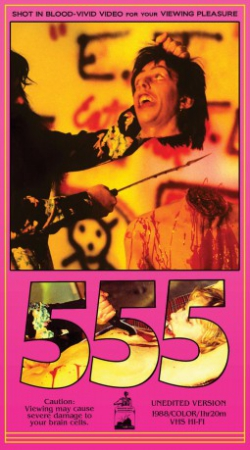

Country:United States, 90 minutes
Spoken languages:English
Genres:Horror
Director(s):Wally Koz
Writer(s):Roy Koz, Wally Koz
Video Codec:Unknown
Number: 2845


Certification:R
Storyline:
A spate of killings of teenagers by a maniac dressed like a hippie causes a detective to check the records for similar killings. He discovers that every five years, in the fifth month of the year, for five consecutive days, the same type of killings have occurred, and the few descriptions of the suspect always match: he's dressed like a hippie. As the detective searches for the killer, he begins to have suspicions about his superior, an older man who is haunted by memories of his military service in Vietnam.
Cast:

Medium: Original DVD,
Loaned: No
Aspect ratio: Unknown